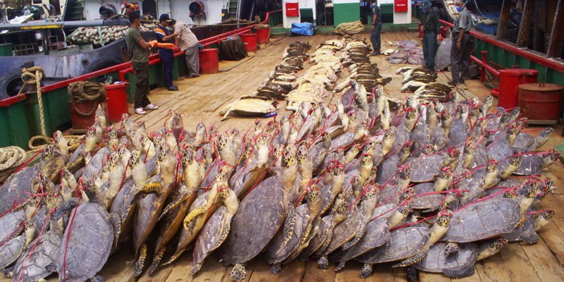
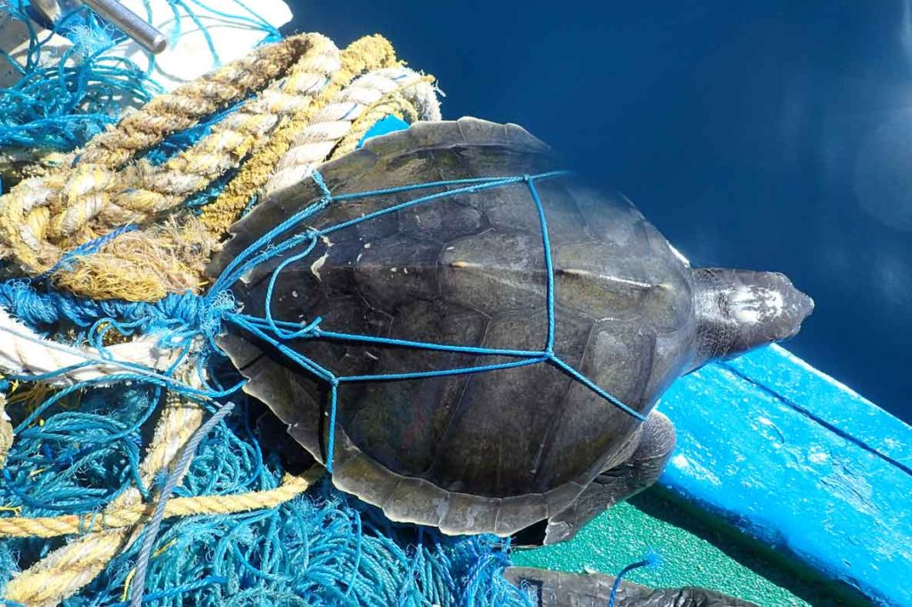

Threats To Sea Turtles

Numerous challenges to sea turtles have led to a reduction in their population across the globe. These dangers are caused by both natural and artificial forces. Due to human behavior and lifestyles, six of the seven species of sea turtles are considered threatened or endangered on a global scale. These animals are impacted by people in a variety of ways, from getting caught in fishing gear to having their meat and eggs eaten.
Habitat Loss

Sea turtles are seriously threatened by the destruction and degradation of their breeding beaches and feeding grounds brought on by coastal development, pollution, and erosive forces. Sand mining, beachfront lighting, and other human activity might disturb nesting sites and confuse hatchlings.
Climate Change

Sea turtles and their habitats are negatively impacted by rising temperatures and climate change. The sex ratio of hatchlings can be impacted by rising temperatures, with warmer nests generating more females. Due to increasing sea levels, it may potentially result in the loss of nesting beaches.
Pollution

Sea turtles are seriously threatened by marine pollution, particularly plastic trash. Plastic bags and other rubbish can be mistaken for food by turtles, which can result in ingesting them and intestinal problems. The health of the turtle-dependent marine ecosystems and the purity of the water are both impacted by pollution.
Illegal Trade

In several regions of the world, trafficking in sea turtles and their products—including their eggs, flesh, shells, and tortoiseshell goods—is forbidden. The already fragile turtle populations are put under more strain by this unlawful commerce.
Fisheries Interactions

Fishing operations frequently unintentionally harm sea turtles. They risk getting hurt or drowned if they become tangled in fishing nets, lines, and other equipment. Sea turtles are under serious risk from fishing gear such as trawls, longlines, and ghost lines.